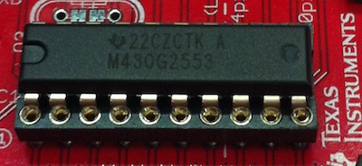
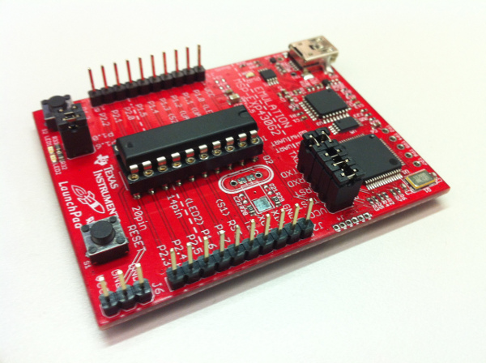
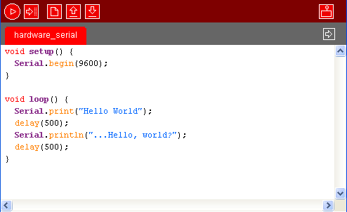

|
This guide will help you get started with serial communication on your Launchpad under Energia.
Hardware ConfigurationThere are several versions of the Launchpad in the wild, and as each package ships with two different MSPs, the array of configurations can be bewildering to the user new to the Launchpad platform or new to microcontroller programming in general. The latest Launchpad, (v1.5) ships with a MSP430G2553 seated in the DIP socket, as pictured in figure 1. Figure 1: MSP430 chip with hardware UART. It is ultimately the chip in the socket that determines the availability of hardware Serial, as all versions of the launchpad board can be reconfigured to support MSP430 chips with a hardware UART if you have them on hand. The other chip that ships in the Launchpad v1.5 box is an MSP430G2452, which does not have an onboard hardware UART. Therefore, even if you have Launchpad v1.5 it is advisable to check that you have the right chip inserted before proceeding If your Launchpad is version 1.4 or earlier, the chips that it shipped with have no hardware UART and thus, no hardware configuration is necessary, but you must use the SoftwareSerial library included in Energia to communicate over the serial port. Unfortunately, software serial communication will use more CPU cycles than the hardware option. With that in mind, if you are coming from the Arduino world, it might be worth the cost to obtain a 1.5 or later Launchpad or a replacement MSP430 such as the MSP430G2553. If you have a chip such as the MSP430G2553 with hardware UART and would like to use a revision 1.4 or earlier launchpad, see the guide below If your Launchpad is version 1.5 it will be labeled "MSP-EXP430G2" with the text "Rev 1.5" in smaller type immediately below, as pictured. In order to enable the Hardware UART on the launchpad, you must manually change the jumper positions on header J3 to match those pictured in figure 2, by rotating them 90 degrees from the position they shipped in. A diagram is silkscreened on the board for clarity. Figure 2: Launchpad Revision 1.5 with jumpers set for hardware UART The Launchpad 1.5 ships with the jumpers in their default position (software UART only) to mimic the behavior of earlier revisions of the Launchpad. By rotating the jumpers, you can use the Energia Serial Library normally. Software ConfigurationHardware UARTFor hardware UART users, the configuration is extremely simple -- it behaves exactly the same as on the Arduino platform. It is noteworthy however, that the onboard Launchpad USB to serial bridge is limited to 9600 baud, as opposed to the higher baud rates available on recent Arduino boards like as the Uno  Figure 3: Screenshot of Energia code using the hardware UART. Software UARTInformation to be added. Hardware UART on Launchpad 1.4If you have a Launchpad of v1.4 (versions that have no 'Rev x.x' printed below the 'MSP-EXP430G2' label are pre 1.5) is is possible to use hardware UART by replacing the MSP430 with a newer model, such as the MSP430G2553 and then cross connecting the serial pins in header J3. |
Functions |
Corrections, suggestions, and new documentation should be posted to the Forum.
The text of the Energia Reference is licensed under a Creative Commons Attribution-ShareAlike 3.0 License. Energia reference is based on Arduino reference. Code samples in the reference are released into the public domain.